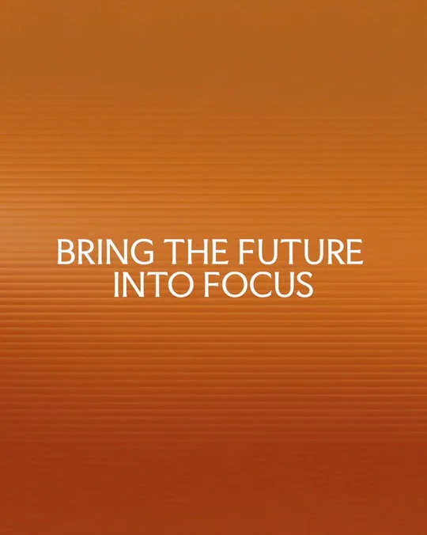
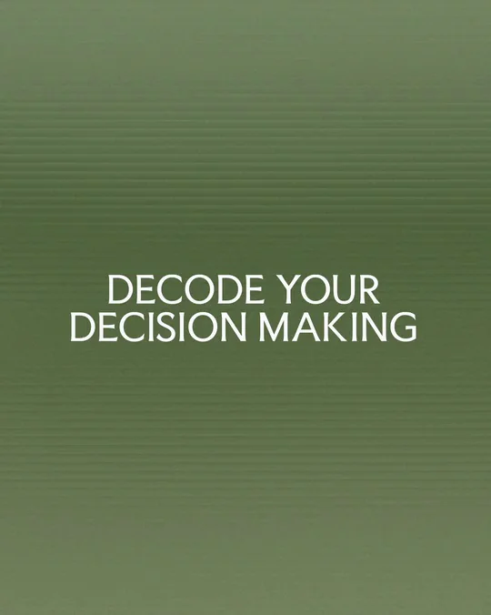
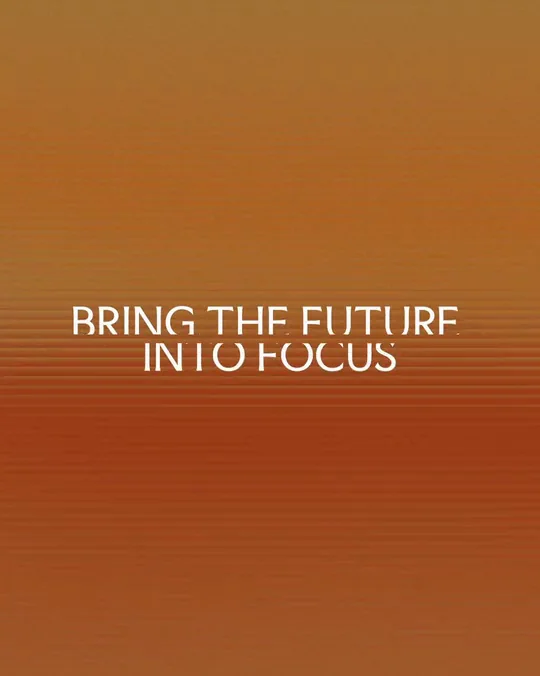
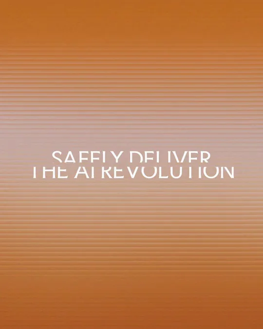
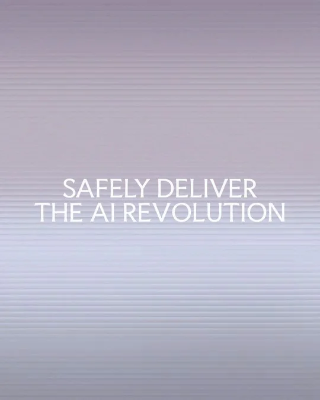
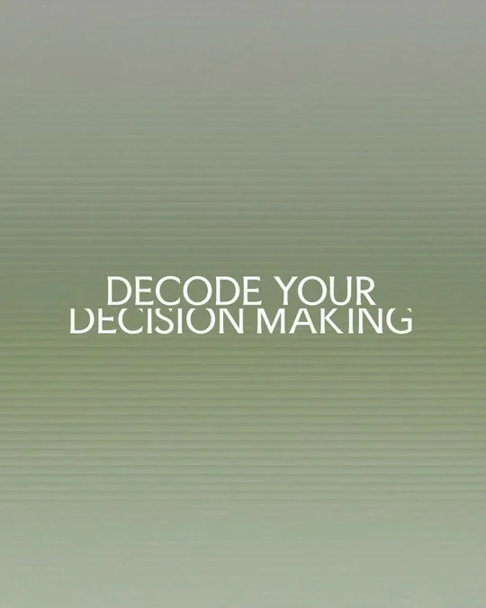

Faculty / V398
Faculty｜渐变文字品牌主张
用缓慢流动的色域承载三句主张，只在换句时短暂打散字形。
构图与编排 可播放 · 可替换内容
整体编排规则示例
查看 HTML 源码
<!doctype html><html lang="zh-CN"><meta charset="utf-8"><meta name="viewport" content="width=device-width,initial-scale=1"><title>Faculty｜渐变文字品牌主张 · sequence</title><style>html,body{margin:0;width:100%;height:100%;overflow:hidden;background:#63734b}canvas{display:block;width:100%;height:100%;object-fit:contain}</style><body data-mode="sequence"><canvas width="1000" height="600"></canvas><script src="data.js"></script><script src="common.js"></script><script src="scene.js"></script><script src="bridge.js"></script></body></html>画面元素连续渐变背景横向细纹双行主张文字条带遮罩
MOTION LANGUAGE
动作与构图
局部动作 · 构图规则
01
让色域承担段落区别

绿、橙、蓝紫分别承载一句话。渐变亮部缓慢移动，细横纹贯穿背景；避免使用互不相关的装饰图形。
02
切片只用于句子交接
切片只用于句子交接规则示例
查看 HTML 源码
<!doctype html><html lang="zh-CN"><meta charset="utf-8"><meta name="viewport" content="width=device-width,initial-scale=1"><title>Faculty｜渐变文字品牌主张 · sequence</title><style>html,body{margin:0;width:100%;height:100%;overflow:hidden;background:#63734b}canvas{display:block;width:100%;height:100%;object-fit:contain}</style><body data-mode="clip" data-start="3.2" data-end="4.8"><canvas width="1000" height="600"></canvas><script src="data.js"></script><script src="common.js"></script><script src="scene.js"></script><script src="bridge.js"></script></body></html>文字保持双行居中，交接时按水平条带短暂错位，再合拢成完整新句。颜色在同一窗口过渡。
03
把阅读停留放在动作之后
句子稳定时不要继续扭曲字形；让背景的轻微流动维持画面。三句结束后自然回接开场。
SEQUENCE
段落与节奏
点击段落，定位到上方编排示意。





画面参考 · 离散静帧
KEEP THE RELATIONSHIPS
制作其他主题
- 替换三组双行短主张和对应色域；每句保持相近字数与视觉宽度。
- 保留渐变缓流、短切片过渡和较长静读三层节奏。
制作约束
连续渐变背景 / 横向细纹 / 双行主张 / 文字条带遮罩
- 背景缓慢明暗流动，文字保持中轴与相近字宽；每组主张对应一个色域。
- 切换时文字短暂分条错位，然后重新拼成完整句子；断裂只发生在交接处。
- 阅读停留明显长于切换过程，不用持续抖字破坏品牌表达。